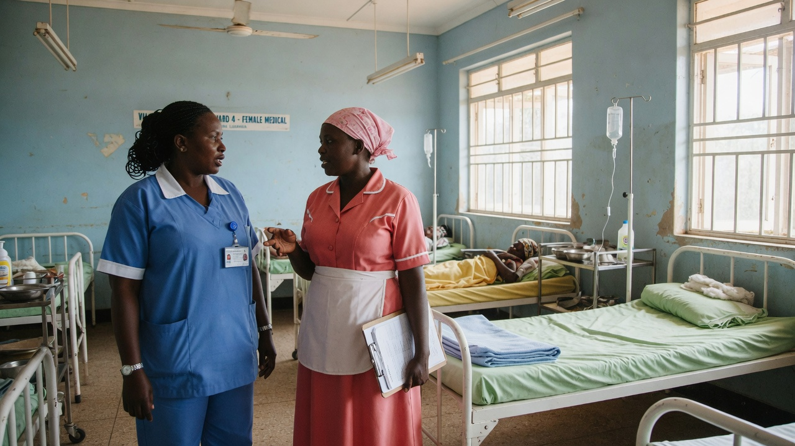

Uganda declares the end of the 2026 Ebola disease outbreak

The Ministry of Health is pleased to announce that Uganda has officially declared the end of the 2026 Ebola Disease outbreak following the successful completion of the mandatory 42-day monitoring period with no new confirmed cases.
This achievement reflects the Government’s strong public health systems, the dedication of frontline health workers, the vigilance of communities, and the support of partners in containing the outbreak.
While Uganda is now Ebola-free, the Ministry urges the public to remain vigilant, especially in border communities, and to immediately report any suspected Ebola symptoms to the nearest health facility or through the toll-free line 0800-100-066 or SMS 6767.
Uganda remains safe, and the country is open for business, tourism, and all socio-economic activities.